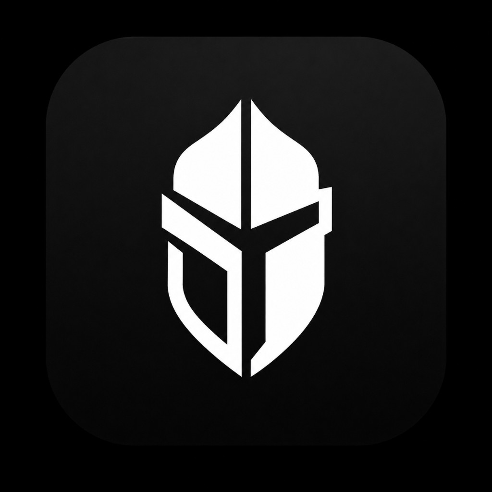

First jailbreak hider for iOS 18 / Dopamine 3. Tweaks and Frida stay injected.
Add this source in Sileo:
https://bbpotklo.github.io/knighty/
Keep Dopamine Hide Jailbreak off. Use Choicy if an app still detects you — inject only Knighty for that app.